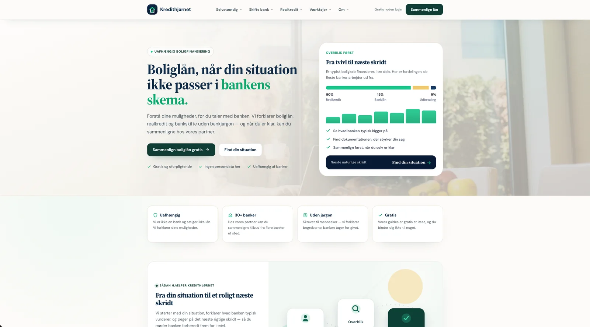

01
Ny hjemmeside
En moderne, hurtig og letforståelig hjemmeside, bygget fra bunden til din forretning — uden skabeloner.
Flere og flere finder virksomheder ved at spørge en AI. Jeg bygger gennemtænkte, hurtige hjemmesider til lokale virksomheder — bygget til at blive fundet både på Google og i AI-søgning.
Hurtige hjemmesider til lokale virksomheder — bygget til Google og AI.
De fleste hjemmesider til lokale virksomheder er bygget efter en opskrift fra 2015: pæn nok, men langsom, svær at forstå for søgemaskiner — og helt uforberedt på, at kunderne har fået en ny måde at søge på. Din næste kunde spørger måske slet ikke Google — men en AI.
Kunden googlede, fik en liste og klikkede rundt. Der var ti pladser at kæmpe om, og det handlede mest om at ligge højt nok til at blive set.
ChatGPT, Perplexity og Googles AI-svar læser en håndfuld sider og sammenfatter ét svar med typisk 3-5 kilder. Er du ikke en af dem, findes du reelt ikke i det svar.
Det er ikke en fjern fremtid — for lokale søgninger udløser Google i dag et AI-svar i over 40 % af tilfældene. Den gode nyhed: de færreste lokale virksomheder er klar til det endnu. Der er en fordel at hente lige nu. Jeg har skrevet grundigt om, hvordan det fungerer, i guiden om AI-søgemaskiner.
Fire ydelser, der dækker det, de fleste lokale virksomheder har brug for. Du arbejder direkte med mig hele vejen — ingen mellemled, ingen skiftende konsulenter.
En moderne, hurtig og letforståelig hjemmeside, bygget fra bunden til din forretning — uden skabeloner.
Et løft af udseende, struktur og tekst. Vi bygger videre på det, der virker, i stedet for at starte forfra.
Når siden er live, holder jeg den hurtig, sikker og opdateret. Du skriver eller ringer, og jeg ordner det.
Mange sider er bygget med kun Google for øje. Jeg bygger siden, så den kan læses og anbefales i begge verdener — Google og AI.
En hjemmeside skal gøre mere end at se godt ud. Den skal hjælpe den besøgende med at træffe en beslutning — og gøre næste skridt indlysende. Her er et rigtigt, live projekt.
Et site om privatøkonomi, hvor målgruppen skal forstå noget kompliceret og træffe et valg. I stedet for endnu en side, der kun fortæller, byggede jeg værktøjer, der regner på læserens egen situation — og gør det konkret nok til at handle på.
Beregnere, der giver et konkret tal med det samme, i stedet for lange forklaringer læseren ikke orker.
Bygget let fra bunden, så den loader hurtigt — også på en telefon med dårligt signal.
Struktur, metadata og indhold lagt an på de spørgsmål, målgruppen faktisk søger efter.

Skærmbillede af det rigtige site — klik for at åbne kredithjornet.dk.
Prisen afhænger af omfanget, så en fast pakkepris ville være et gæt. I stedet sætter vi løsningen sammen efter dit behov. Vælg det, der passer, så vender jeg tilbage med et konkret, uforpligtende forslag.
Hvad har du brug for? Vælg et eller flere.
Sådan kunne dit projekt se ud:
Ved du ikke helt, hvad der skal til? Det er helt normalt. Book en uforpligtende snak, så kigger vi på det sammen.
Tre trin fra første besked til et konkret forslag. Du binder dig ikke til noget undervejs.
Skriv et par linjer om din virksomhed, og hvad du gerne vil have hjælp til.
Under 1 minutJeg kontakter dig, så vi afklarer dine ønsker og mål. Du får ærlig rådgivning om, hvad der giver mest mening.
Ca. 30 minEt uforpligtende forslag med pris, tidsplan og næste skridt. Præcis hvad du får — uden binding.
1–2 dage
Efter handelsskolen flyttede jeg til München, hvor jeg i en årrække arbejdede med digital forretningsudvikling og drift til daglig: webudvikling, SEO, Google- og Bing Ads, leadgenerering, indhold, kundeservice, e-commerce og konverteringsoptimering.
Det betyder, at jeg ikke kun designer en side — jeg kender hele den digitale værdikæde bag den: hvordan du bliver fundet, hvordan besøgende bliver til kunder, og hvad der skal til for at siden bliver ved med at fungere i drift.
Det, jeg lægger ekstra vægt på, er AI-søgemaskiner som ChatGPT og Perplexity — så din virksomhed også bliver nævnt, når folk spørger en AI om hjælp. Og arbejder du med mig, har du én kontaktperson hele vejen. Ingen mellemled.
Prisen afhænger af omfanget — antal sider, design, tekst, funktioner og SEO. Derfor giver jeg ikke en fast standardpris, før jeg kender projektet. Send en kort besked, så vender jeg tilbage med et ærligt og konkret tilbud uden binding.
Det afhænger af projektets størrelse og hvor meget indhold der skal produceres. En enkel side går hurtigere end en større side, en webshop eller et redesign. Du får en realistisk tidsplan sammen med tilbuddet — ikke et løst gæt.
Ja, og det er helt uforpligtende. Vi taler om din virksomhed, din nuværende side og hvad du gerne vil opnå. Bagefter sender jeg et konkret forslag — eller siger ærligt fra, hvis jeg ikke er den rigtige til opgaven.
Nej. Jeg bygger siderne fra bunden, så de bliver hurtige, rene og tilpasset netop din forretning. Skabelonsider er billigere at lave, men de er ofte langsomme, ens at se på og svære at optimere ordentligt.
Nej. Jeg hjælper med struktur, formuleringer og SEO-venligt indhold, så teksten både lyder som dig, er nem at forstå for kunderne og tydelig for Google.
I de fleste tilfælde ja — siden kan bygges, så du selv kan rette tekst, billeder og produkter. Vi aftaler præcis, hvad du skal kunne redigere, inden vi går i gang.
Det gør du. Domæne, indhold og den færdige side tilhører dig. Du er ikke bundet til mig for at kunne bruge din egen hjemmeside.
Et domæne koster typisk under hundrede kroner om året. Hosting kan i mange tilfælde holdes meget billigt eller gratis, fordi jeg bygger lette, statiske sider. Ønsker du løbende support og opdateringer, aftaler vi det separat.
Siden bygges med et solidt SEO-fundament fra start: teknik, hastighed, struktur, metadata og indhold der matcher det, dine kunder søger på. Ingen kan love en bestemt placering, men synlighed er en fast del af arbejdet — ikke noget der kommer bagefter.
Flere og flere spørger ChatGPT eller Perplexity i stedet for kun at google. De AI'er henter svar fra hjemmesider og citerer nogle få kilder. AI-synlighed handler om at bygge din side, så den er nem for en AI at læse, forstå og anbefale. Jeg har skrevet en grundig guide om det her.
Ja. Jeg har arbejdet med e-commerce i praksis — fra produktsider og købsflow til ordrehåndtering — og hjælper med at gøre en webshop hurtig og nem at handle på.
Du skriver eller ringer, og jeg hjælper. Smårettelser, opdateringer, nye sektioner eller tekniske spørgsmål — din side bliver ikke afleveret og glemt.
Send et par linjer om dit projekt. Jeg vender tilbage inden for 24 timer — uforpligtende, og du binder dig ikke til noget.
Eller skriv/ring direkte: kontakt@thordahlstudio.dk · +45 81 61 66 08